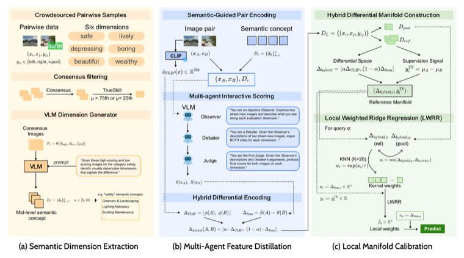
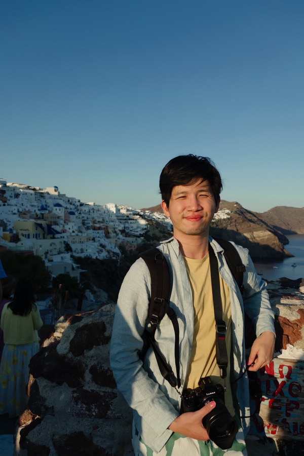
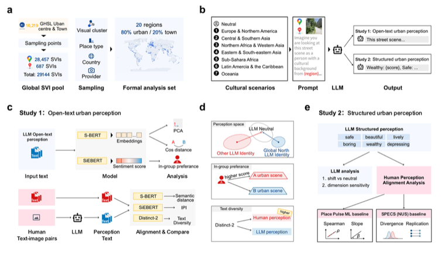
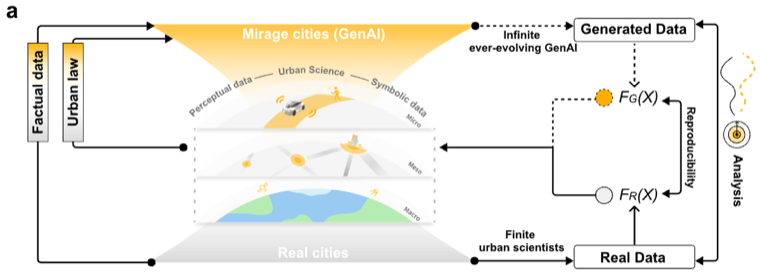

Rong Zhao (赵容)
I will join the Department of Civil Engineering at The University of Hong Kong (HKU) in Spring 2027 as a PhD student in Traffic and Transportation Engineering, co-supervised by Prof. Jintao Ke and Prof. S. C. Wong.
I received my Master of Research in Urban Spatial Science (MRes) from University College London in September 2026 and my Bachelor of Architecture from Tsinghua University in 2025.
My research interests include traffic behaviour modelling, transport resilience, and LLMs for urban science.
I welcome all forms of collaboration.

Education
Jan 2027 – Jan 2030
(expected)
PhD in Traffic and Transportation Engineering
The University of Hong Kong · Department of Civil Engineering
Sep 2025 – Sep 2026
Master of Research in Urban Spatial Science (MRes)
University College London
2020–2025
Bachelor of Architecture (B.Arch.)
Tsinghua University
Selected Papers

Culturally Uneven Urban Perception in Large Language Models
Under revision at npj Urban Sustainability

GenAI Models Capture Urban Science but Oversimplify Complexity
Under revision at Nature Communications, 2025